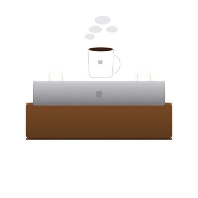

추천 · 실제 앱

MacSlowCooker REAL · OSS
무료 · Apache 2.0 · Apple Silicon 및 Intel
macOS Dock 아이콘으로 GPU / 온도 / 팬 / 전력을 냄비 메타포로 시각화. 플로팅 창, MRTG 스타일 4분할 기록, Prometheus 익스포터, PNG 내보내기. 실제 소프트웨어.
GitHub에서 받기 고객지원 →액세서리 · 컨셉 패러디

Mac Studio용
Cooking Plate
Mac Studio (M1/M2/M3 Max · Ultra)
당신의 Mac Studio. 이제 조리 기구가 됩니다.
₩ 119,000부터



MacBook Pro용
Hot-Plate Sleeve
MacBook Pro 14"/16" (M3/M4)
닫아서 연산. 열어서 컵.
₩179,000부터
이 스토어에 대하여. 위 액세서리는 모두 패러디 컨셉입니다. 실제 물리적 제품으로 존재하지 않으며 판매되지 않습니다. Apple은 본 컬렉션과 무관합니다. 표시된 온도와 시간은 실제 Mac 하드웨어에서 동작하는 MacSlowCooker (실제 앱)의 실측치입니다 — 단지 조리 가전 제품 라인인 것처럼 framing 했을 뿐입니다. 실제로 Mac 위에 조리 기구를 올려놓지 마세요.
출시 예정 (이것도 실재하지 않음)
MacBook Pro 핫플레이트 슬리브 · Mac Pro 훈제 에디션 · iPad mini 냄비받침 · AirPort Time Capsule 수비드 욕조